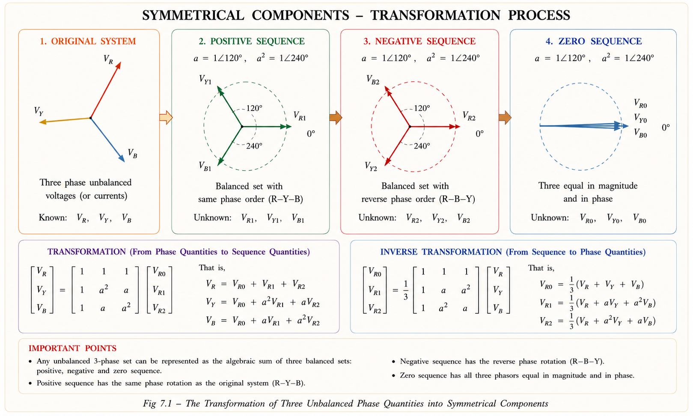
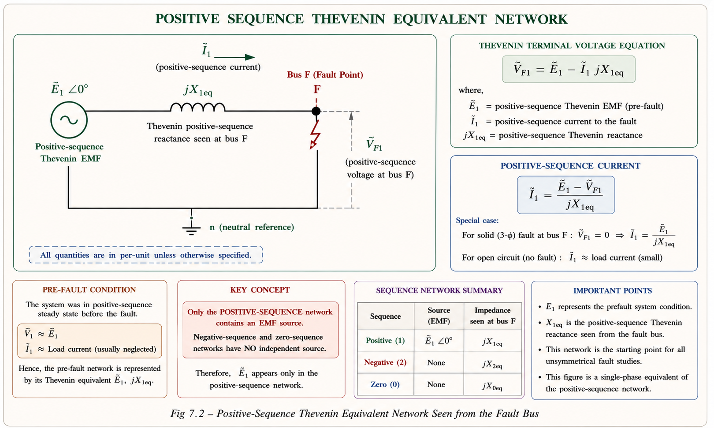
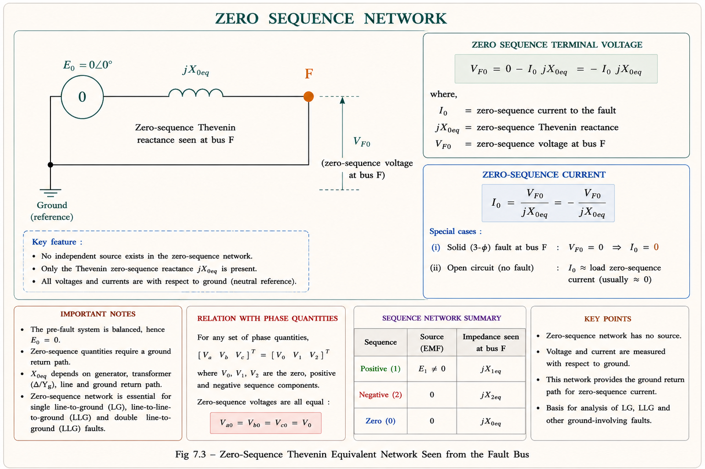
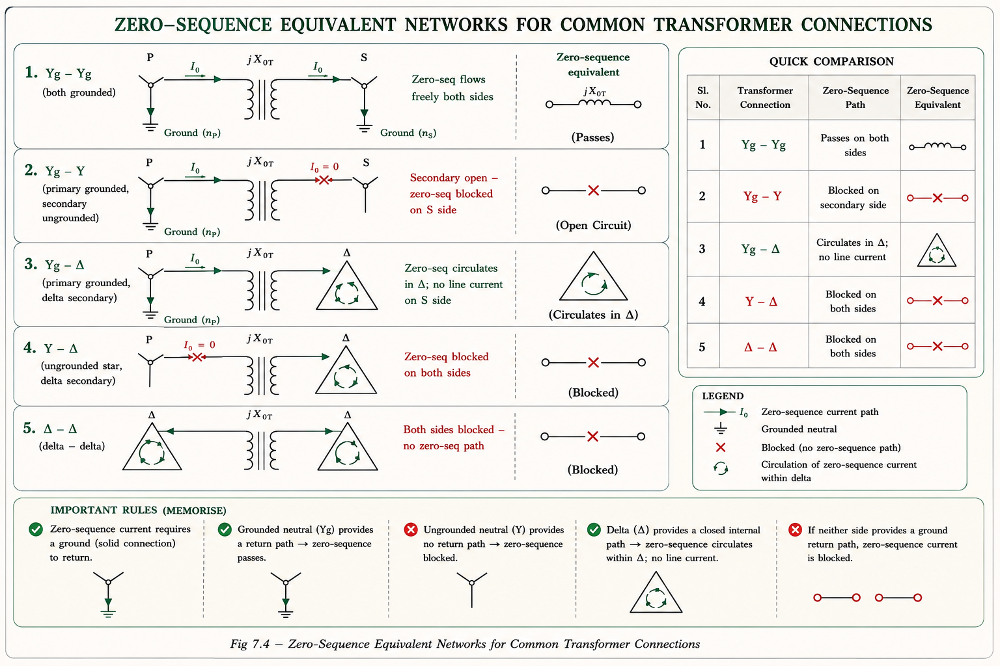
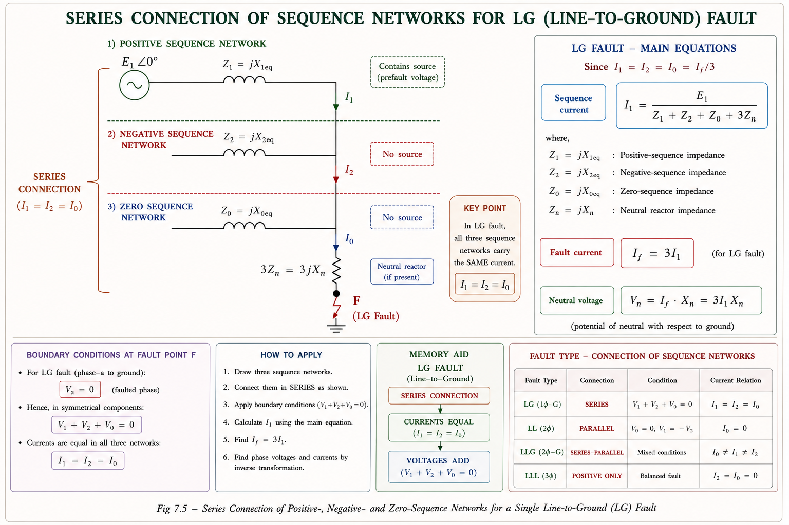
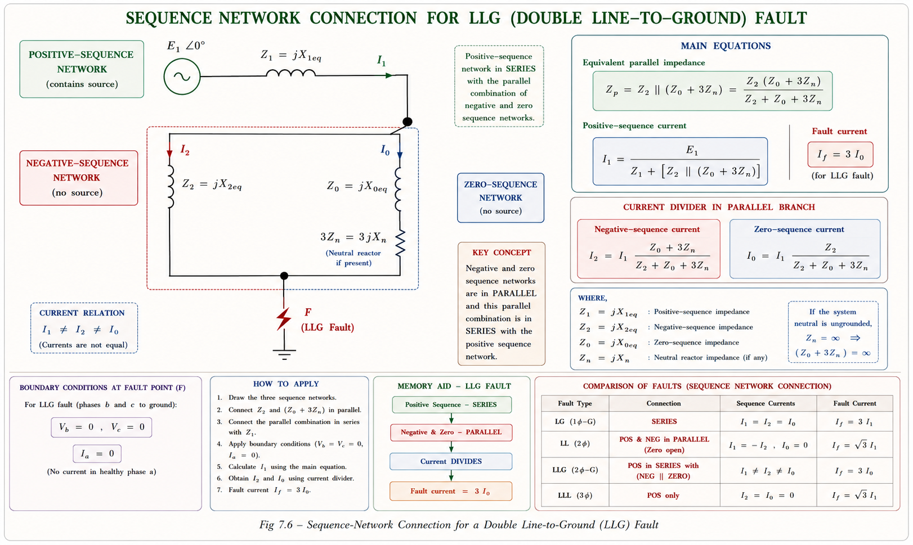

Fortescue's theorem, sequence networks, and all four fault types — analysed completely using per-unit symmetrical components. The single most tested topic in GATE EE and IES E&T power systems.
Power systems are designed to operate in a perfectly balanced three-phase condition. Every generator produces three EMFs equal in magnitude and displaced exactly 120° from each other; every load draws equal currents. In this ideal world, circuit analysis is easy — you solve one phase and multiply by three.
But faults destroy this symmetry. When a single conductor snaps and touches the ground (a line-to-ground fault), the three phase currents become wildly unequal. Classical mesh or nodal analysis of an unbalanced three-phase network would require solving enormous simultaneous equations — impractical even for computers of the 1960s and 70s, and impossible by hand.
C.L. Fortescue (1918) proved that any set of unbalanced phasors can be replaced by three sets of perfectly balanced phasors — called sequence components. Each balanced set can be solved independently, then superimposed to recover the original unbalanced answer. This decouples a messy 3-phase problem into three clean single-phase problems.
Fortescue's theorem states: any set of n unbalanced phasors can be decomposed into n sets of balanced phasors, each having n phasors. For a three-phase system (n = 3), any unbalanced set \((V_R,\, V_Y,\, V_B)\) decomposes into three balanced sets:

ZOOMFig 7.1 — Fortescue decomposition of unbalanced phasors into three balanced sets.
| Sequence | Physical Meaning | Phase Order | When It Exists | Reactance |
|---|---|---|---|---|
| Positive (+ve) | Normal operating components. Rotor flux and stator flux rotate in the same direction. | R → Y → B (RYB) | Always — before and during any fault | X₁ = X″d |
| Negative (−ve) | Reverse-rotating flux at −Nₛ. Relative to rotor: 2Nₛ. Induces double-frequency rotor current → overheating. | R → B → Y (RBY) | Any unbalanced fault (LG, LL, LLG) | X₂ = X″d (cylindrical); avg(X″d,X″q) (salient) |
| Zero (0) | All three co-phasal (in-phase). No rotation. Acts as leakage flux in stator. No armature reaction → Xa=0. | All in phase | Only when fault involves ground AND nearest neutral is grounded | X₀ ≪ X″d |
Zero sequence components exist only when the fault is a ground fault AND the system neutral is grounded. For an isolated neutral system, zero sequence current is zero — but the fault can still be analysed as an LL fault.
To write the three sequence components compactly, we use a rotation operator. In Indian textbooks (ACE, MADE EASY) it is called K; in international textbooks (Stevenson, Bergen) it is called a. They are identical:
Using operator a, the forward (Fortescue) transform for phase R is:
In fault analysis we always treat phase R as the faulted (or reference) phase. The sequence components subscripted "R" are the per-phase quantities used in single-phase equivalent circuits. The other phases are recovered from the inverse transform if needed.
"1 + a + a² = 0" — think of three unit phasors at 0°, 120°, 240°. When you add three balanced phasors, the vector sum is always zero. This identity is used in every fault derivation.
Each sequence has its own Thevenin equivalent circuit — called a sequence network. The three sequence networks are independent (decoupled) for balanced systems. They are interconnected only at the fault point to model boundary conditions.
Contains the generator EMF \(E_{R1}\) and positive-sequence equivalent impedance \(X_{1eq}\). Since the system was in positive-sequence steady-state before the fault, the EMF source is present.

ZOOMFig 7.2 — Positive sequence single-phase equivalent. X₁eq is the Thevenin positive-sequence reactance seen at fault bus F.
No generator EMF exists in the negative-sequence network — synchronous generators only produce positive-sequence EMF. The reactance is \(X_2\) (= \(X''_d\) for cylindrical rotor machines).
No generator EMF. Reference is ground (not neutral). Neutral grounding impedance \(Z_n\) appears as \(3Z_n\) in the zero-sequence circuit because the neutral carries \(3I_{R0}\) (all three co-phasal ground-return currents add in the neutral).

ZOOMFig 7.3 — Zero sequence network. Note 3Xₙ because neutral carries three times the zero-sequence current.
| Component | +ve Sequence X₁ | −ve Sequence X₂ | Zero Sequence X₀ |
|---|---|---|---|
| Transmission Line | X₁ (series reactance) | X₂ = X₁ | X₀ = 3·X₁ (approx, varies 2.5–3.5×X₁) |
| Transformer | X₁ (leakage) | X₂ = X₁ | X₀ = X₁ (depends on winding connection) |
| Cylindrical Rotor Syn. Machine | X₁ = X″d | X₂ = X″d | X₀ ≪ X″d (leakage only) |
| Salient Pole Syn. Machine | X₁ = X″d | X₂ = (X″d+X″q)/2 < X″d | X₀ ≪ X″d |
For a salient-pole machine: \(X_2 = (X''_d + X''_q)/2\), so \(X_2 < X''_d\). For a cylindrical rotor machine: \(X_2 = X''_d\). Zero sequence reactance \(X_0\) is always much smaller than \(X_1\) because there is no armature reaction (flux doesn't link rotor).
The zero-sequence network of a transformer depends entirely on how its windings are connected and grounded. This is one of the most frequently tested subtopics in both GATE and IES. The rule is simple: a winding can pass zero-sequence current only if it is star-connected with a grounded neutral. Delta windings and ungrounded star windings block zero-sequence current from entering the line.
A transformer winding is modelled as a series switch (in series with the leakage reactance XT0) if it is Y-connected, and a parallel switch (shunt to ground) if it is Δ-connected. Series switch closed = grounded Y; open = ungrounded Y. Parallel switch closed = Δ (circulates internally); disconnected from line = Δ (no line current).

ZOOMFig 7.4 — Zero-sequence network representations for common transformer winding configurations. Memorise these for GATE.
This is the most common fault in power systems — over 70% of all faults. Phase R touches the ground; phases Y and B remain healthy. The alternator is at no-load, rated voltage, solid neutral, and solid fault (zero fault impedance).
Apply the forward Fortescue transform to the boundary currents:
All three sequence currents are equal for a single line-to-ground fault. This means the three sequence networks are connected in series at the fault point.

ZOOMFig 7.5 — LG fault: three sequence networks connected in series. Fault current = 3 × positive-sequence current.
For a solidly grounded neutral (\(X_n = 0\)) with \(X_0 < X_1\), the LG fault current exceeds the three-phase fault current. This is why CB minimum pickup is set based on LG fault.
Phases Y and B are short-circuited together but not connected to ground. Phase R remains healthy and open. This is the second most common type of fault.
No zero-sequence component (fault does not involve ground). Negative-sequence current is equal and opposite to positive-sequence current: \(I_{R2} = -I_{R1}\). The two sequence networks are connected in anti-parallel (back-to-back).
Note: \(V_n = 3I_{R0}X_n = 0\) — neutral voltage is zero regardless of neutral grounding. LL fault current is independent of neutral grounding.
Phases Y and B are shorted together and also grounded. Phase R remains open. This is an unbalanced fault with ground, so zero-sequence components exist.
The fault has three networks: the negative and zero sequence networks are connected in parallel, and this parallel combination is in series with the positive sequence network.

ZOOMFig 7.6 — LLG fault: negative and zero sequence networks in parallel, connected in series with positive sequence network.
When neutral is isolated: \(X_{0eq} \to \infty\), so the zero-sequence network becomes open. The parallel combination of \(X_2 \| \infty = X_2\). The LLG fault reduces exactly to an LL fault — ground current = 0.
All three phases are shorted together (LLL) or shorted and grounded (LLLG). This is the only symmetrical fault — the three-phase balance is maintained even during the fault.
A three-phase fault involves only the positive sequence network. The terminal voltage of the positive-sequence network is zero at the fault point. This gives the maximum possible fault current from positive-sequence analysis.
The three-phase fault current does not depend on how the neutral is grounded. Whether the neutral is solid, reactance-grounded, or isolated, \(I_f = E_{R1}/X_{1eq}\) always.
One of the most frequently asked GATE questions is: "Order the fault currents." This depends on the grounding condition and the relative magnitudes of \(X_0\) vs \(X_1\).
| Fault Type | Formula (p.u.) | Networks Used | Ground-dependent? |
|---|---|---|---|
| LLL (3-Phase) | \(I_f = E/X_1\) | +ve seq only | No |
| LG (1-Phase to Ground) | \(I_f = 3E/(X_1+X_2+X_0)\) | +ve, –ve, 0 in series | Yes (heavily) |
| LL (Line-to-Line) | \(I_f = \sqrt{3}E/(X_1+X_2)\) | +ve, –ve in anti-parallel | No |
| LLG (Double L-to-G) | \(I_f = 3I_{R0}\) (complex) | +ve seq + (–ve || 0) | Yes |
For most practical systems where \(X_0 < X_1\) (which is common in generator windings):
Ground fault > Symmetrical fault > Line-to-Line fault (when X₀ < X₁). Think: "Ground faults are the Greatest, Three-phase is Second, Line-to-Line is Least."
When a ground fault occurs with isolated neutral, the line capacitances maintain a "charging current" that keeps the arc alive. To extinguish this, the neutral is connected to ground through a Peterson Coil (also called a Petersen coil or arc-suppression reactor).
The coil inductance is tuned so that the inductive current from the neutral reactor exactly cancels the capacitive charging current in the fault. The residual current is near zero, so the arc extinguishes itself — called resonant grounding.
The sub-transient reactance \(X''_d\) is very small, making the initial fault current extremely large. A large fault current demands expensive, high-rated circuit breakers. To reduce fault current (and hence CB cost), series reactors are inserted in the circuit.
Given: X₁ = 0.30 p.u., X₂ = 0.40 p.u., X₀ = 0.05 p.u., Ifault ≤ Irated = 1.0 p.u.
Step 1: LG fault current formula with neutral reactance Xn:
Step 2: Set If = 1.0 p.u. (rated):
Step 3: Convert to ohms:
Neutral reactance Xn = 0.75 p.u. = 14.28 Ω
Combined (Thevenin) sequence reactances at fault bus:
Fault current (LG formula):
Base current:
Neutral voltage:
(a) If ≈ 5.9 kA (b) Vn = 642 V
Base current: \(I_b = 20\times10^6/(\sqrt{3}\times33\times10^3) = 350\;\text{A}\)
From LLL fault: \(I_{f,\text{LLL}} = E/X_1\)
From LL fault: \(I_{f,\text{LL}} = \sqrt{3}\,E/(X_1+X_2)\)
From LG fault: \(I_{f,\text{LG}} = 3E/(X_1+X_2+X_0)\)
X₁ = 1.097 p.u. (59.7 Ω) · X₂ = 0.295 p.u. (16.06 Ω) · X₀ = 0.202 p.u. (11.0 Ω)
For a single line-to-ground fault at the terminal of a synchronous generator, the sequence networks are connected in
Explanation: For LG fault: \(I_{R0}=I_{R1}=I_{R2}\). Equal sequence currents → series connection of all three networks. This is the defining characteristic of LG fault.
A three-phase synchronous generator is grounded through a reactance. The positive, negative and zero sequence reactances are X₁, X₂, X₀. If X₀ < X₁ = X₂, which statement about fault current magnitudes is correct for a solidly grounded neutral?
Reasoning: LLL: \(E/X_1\). LG: \(3E/(2X_1+X_0)\). Since X₀ < X₁, denominator of LG < denominator of LLL → ILG > ILLL. LL: \(\sqrt{3}E/2X_1 < E/X_1\). So order is ILL < ILLL < ILG.
The negative sequence component of current flowing during an unbalanced fault has relative speed with respect to the rotor equal to
Explanation: Negative sequence flux rotates at −Ns in space. Rotor spins at +Ns. Relative speed = +Ns − (−Ns) = 2Ns. This induces double-frequency (100 Hz for 50 Hz system) EMF in rotor → circulating rotor currents → overheating.
A 100 MVA, 11 kV, 50 Hz synchronous generator has positive, negative and zero sequence reactances of 0.3, 0.25 and 0.05 p.u. respectively. The generator neutral is solidly grounded. A single line-to-ground fault occurs at the terminals. The fault current in p.u. is approximately:
Which transformer winding connection allows zero-sequence current to flow in both primary and secondary lines?
Explanation: Only Yg–Yg allows zero-sequence current to flow in both primary and secondary lines. Yg–Δ allows it on the primary but the delta blocks it from entering the secondary line (circulates within delta). Δ–Δ and ungrounded-Y block it on both sides.
If \(a = e^{j2\pi/3}\), the value of \(1 + a + a^2\) is:
Explanation: Three unit phasors at 0°, 120°, 240° form a balanced set. Their vector sum is exactly zero. This identity is the foundation of all symmetrical component analysis.
| Topic | Probability | Key Formula / Concept |
|---|---|---|
| LG Fault current formula | 🟢 High | \(I_f = 3E/(X_1+X_2+X_0+3X_n)\) |
| Sequence network connections for all fault types | 🟢 High | Series/Parallel/Anti-parallel rules |
| Fault current ordering | 🟢 High | Depends on X₀ vs X₁ relationship |
| 3-phase fault formula & SC MVA | 🟢 High | \(\text{SC MVA} = \text{Base MVA}/X_1\) |
| Negative seq. — rotor heating | 🟡 Medium | 2Ns relative speed → double-frequency rotor current |
| Zero-seq. T/F networks | 🟡 Medium | Yg–Yg, Yg–Δ, Δ–Δ models |
| Peterson coil design | 🔴 Low | \(L = 1/(3\omega^2 C)\) |
| Neutral voltage formula | 🟡 Medium | \(V_n = I_f \cdot X_n = 3I_{R0}X_n\) |
Ask any question about symmetrical components, sequence networks, fault analysis, or related GATE/IES numericals.
Any unbalanced phasors = +ve + −ve + zero sequence balanced sets. Forward: \([V_0, V_1, V_2] = \frac{1}{3}A^{-1}[V_R, V_Y, V_B]\). Inverse: \([V_R, V_Y, V_B] = A \cdot [V_0, V_1, V_2]\).
+ve: has EMF source, \(X_{1eq}\). −ve: no EMF, \(X_{2eq}\). Zero: no EMF, ref=ground, \(X_{0eq} = X_0 + 3X_n\). Networks decoupled in balanced system.
\(I_{R0} = I_{R1} = I_{R2}\) → series connection. \(I_f = \frac{3E}{X_1+X_2+X_0+3X_n}\). Zero-seq exists. Highest fault current when \(X_0 < X_1\).
\(I_{R0} = 0\), \(I_{R2} = -I_{R1}\) → anti-parallel. \(I_f = \frac{\sqrt{3}E}{X_1+X_2}\). No zero-seq. Independent of neutral grounding.
−ve and zero in parallel, series with +ve. \(I_f = 3I_{R0}\). Current divider for \(I_{R0}\). Reduces to LL if neutral isolated.
Only +ve seq. \(I_f = \frac{E}{X_{1eq}}\). SC MVA = \(\frac{\text{Base MVA}}{X_1}\). Neutral independent. Terminal \(V_{R1} = 0\). Maximum symmetrical fault.
All technical content derived from standard textbooks listed below. All explanations, derivations, diagrams, and examples are original to Aarova AI.